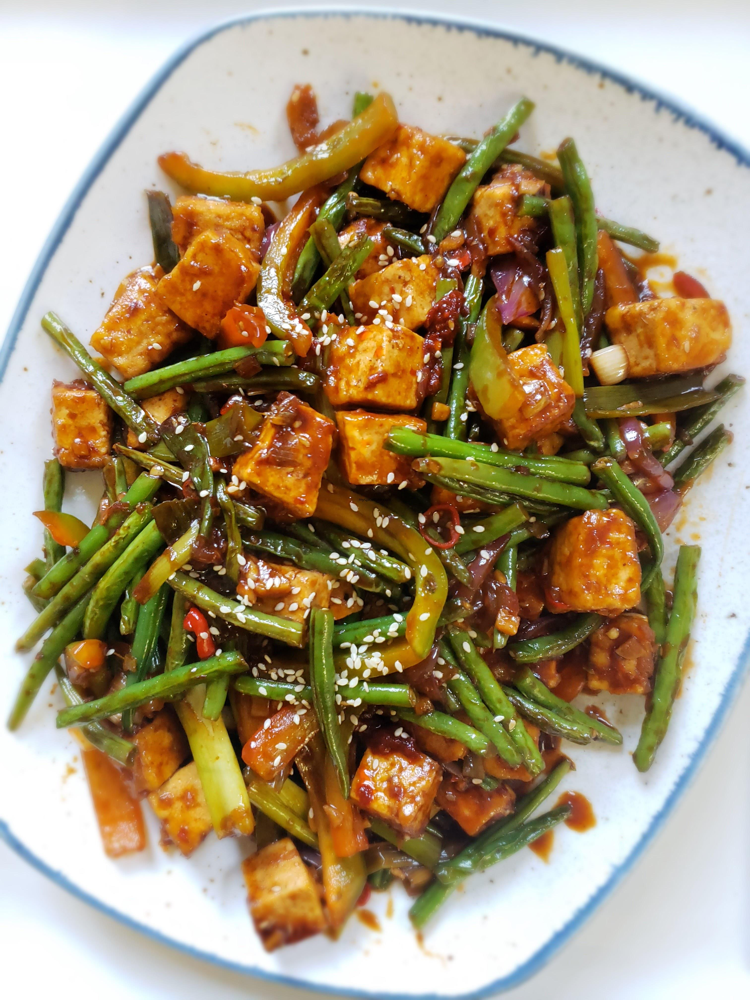
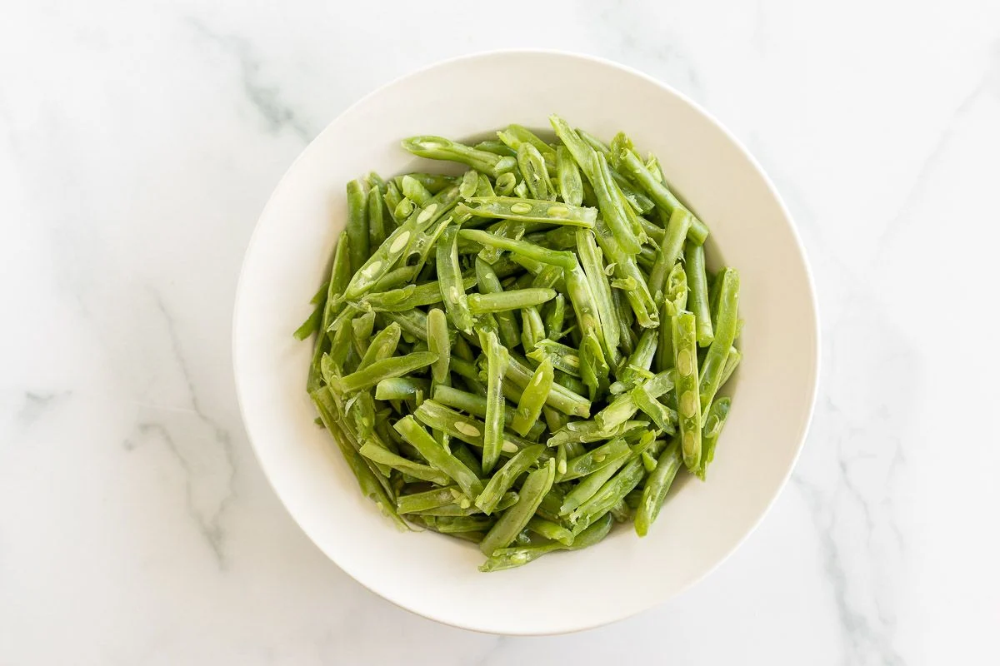
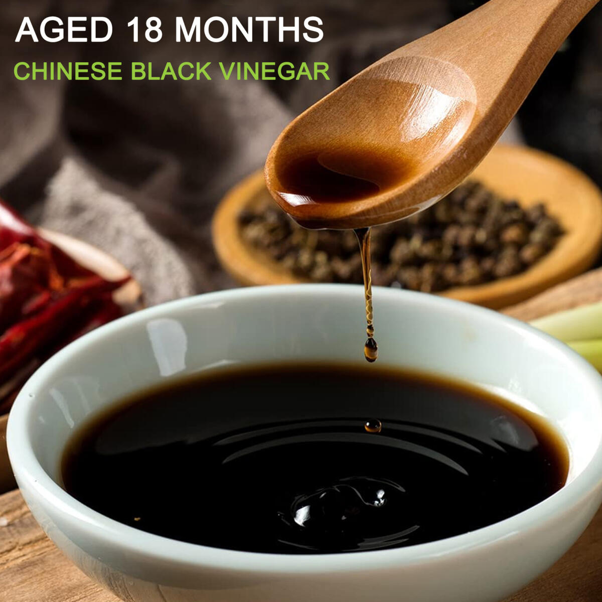
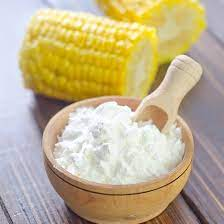
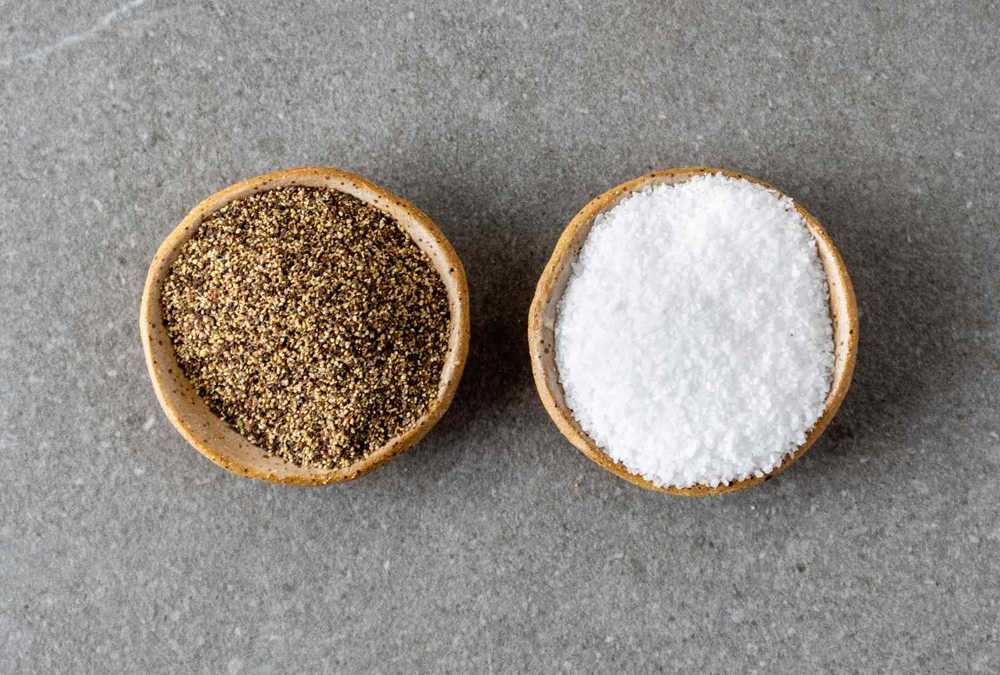
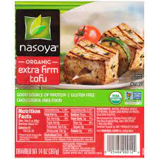

Szechuan Tofu & Green Bean Stir-Fry


 ¼ cup reduced-sodium soy sauce
¼ cup reduced-sodium soy sauce

4 cups green beans, trimmed and cut in half
2 teaspoons Chinkiang vinegar 1/4teaspoon crushed red pepper
1/4teaspoon crushed red pepper

1 teaspoon plus 2 tablespoons cornstarch, divided
1/2 tbs SALT & PEPPER 4 CLOVES GARLIC
4 CLOVES GARLIC
 2 tbs OF GINGER
2 tbs OF GINGER

1 1/4-Pounce package extra-firm tofu, drainedServing Size: 8
Servings Per Recipe: 8
Serving Size: 1/2 cup
Calories: 120
| Nutrient | Amount | % Daily Value * | Total Carbohydrate | 21g | 7% |
|---|---|---|
| Dietary Fiber | 5g | 17% |
| Total Sugars | 5g | 0% |
| Added Sugars | 2g | 4% |
| Protein | 12g | 24% |
| Total Fat | 12g | 15% |
| Saturated Fat | 2g | 8% |
| Vitamin A | 864 IU | 17% |
| Vitamin C | 13mg | 14% |
| Vitamin E | 2mg | 13% |
| Folate | 55mcg | 14% |
| Sodium | 412mg | 18% |
| Calcium | 253mg | 19% |
| Iron | 5mg | 25% |
| Magnesium | 92mg | 22% |
| Potassium | 352mg | 7% |
| Vitamin B12 | O mug | 19% |